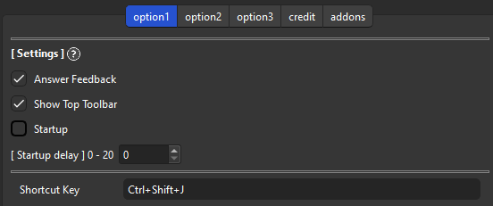

üïπÔ∏èAnkimote
üïπÔ∏èAnkimote - Free Anki Remote by Smartphone via Wifi (Custom by Shige‡∂û)
AnkiWeb Page | Code : 1960305789
This add-on is a customized version of the “Ankimote” add-on, originally created by TheDabblingDuck and credit goes to them. This version fixed the bug in some devices not working, enhanced the user interface, added new options, etc. You can try this if the original Ankimote does not work well on your device.
Ankimote
(These descriptions and images are from the original add-on and partially edited.)
Ankimote is an addon that adds remote control functionality to Anki, the open source flashcards app.
After installing this addon, selecting ‘Ankimote’ from the Anki toolbar will start Ankimote and display a QR code and URL directing to the remote that can be accessed by any other device on the local network (usually your phone). Best used with the Zoom for Anki addon to make card text bigger. Then place your laptop far away (or plug into an external monitor or TV) and put your feet up!
Screenshots
Tap mode (best in landscape)
Swipe mode and swipe settings


Connect by scanning a QR or visiting the URL from a phone or other device that is on the same local network.
QR can be displayed in these ways:
- Click on “✘” on the top toolbar
- Tools -> Ankimote -> Connect Ankimote
- Shortcut key ‘Ctrl+Shift+J’
- Optionally auto display on Anki startup.

Visual feedback in the desktop Anki app. (üö®This will not work on the Mac. Workaround is under development, please wait.)

Features
-
Answer cards (again, hard, good, easy) from the remote and get visual feedback on the desktop app
-
Scroll up, scroll down, undo from the remote
-
One-hand (Swipes) and two-hand (Taps) control interfaces
-
Switch decks without touching your computer
-
Works with the AMBOSS addon to flip through popups
-
‘Show Hints’ action reveals hidden portions of cards in common decks such as Anking and Pepper
Advanced features (see addon config in Anki):
-
Custom actions to trigger execution of user-defined Python code (to interact with Anki) or Javascript (to interact with the current card)
-
Custom hook support for integration with other addons
Limitations
-
Both devices must be on the same network (usually the same WiFi name)
-
The network must allow local communication (public networks like coffee shops and some schools may not work)
If you encounter connection problems, please read Troubleshooting.
Settings

Anser Feedback
- Enables or disables visual feedback. (üö®This will not work on the Mac. Workaround is under development, please wait.)
Show top Toolbar
- Hide the button for the QR code that is displayed on Anki’s top toolbar. Need to restart Anki.
Startup
- Ankimote QR code is auto displayed when Anki is launched.
- Startup delay: Delays startup for a few seconds. If there is an add-on that refreshes the add-on Home QR will be removed (e.g. Rearrange home add-ons), in this case setting the delay to about 7 seconds works.
Shortcut key
- You can change the shortcut key for displaying the QR Code.
The default setting is
Ctrl+Shift+J. Need to restart Anki.
Custom Commands
These settings apply immediately.

-
These 5 custom command slots can be used to run any Python command from the Ankimote remote, thus allowing access to far more Anki functions.
-
Enter name of command in cmd{n}-label
-
Example commands pulled from the _shortcutKeys function in Anki’s reviewer.py:
-
Suspend card:
mw.reviewer.onSuspendCard() -
Suspend note:
mw.reviewer.onSuspend() -
Mark card:
mw.reviewer.onMark() -
Flag card:
mw.reviewer.setFlag(1)- Replace the number: red=1, orange=2, green=3, blue=4
-
Bury card:
mw.reviewer.onBuryCard() -
Bury note:
mw.reviewer.onBuryNote() -
Delete note:
mw.reviewer.onDelete() -
Replay audio:
mw.reviewer.replayAudio() -
Pause audio:
mw.reviewer.on_pause_audio()
-
Custom JavaScript
-
To run JavaScript inside your card, use the above custom command slots with the Python function
mw.web.eval( \"[your JS code]\" )-
Example:
mw.web.eval( \"document.getElementById('io-revl-btn').onclick();\" ) -
The above command will click the toggle button in an Image Occlusion card.
-
-
Multi-line javascript should be converted to a single line with commands separated by semicolons.
-
Example:
mw.web.eval( \"var x=document.getElementsByClassName('hint'); for(i=0;i<x.length;i++) { if(x[i].tagName=='A') { x[i].onclick(); } };\" ) -
The above command finds all link elements with class name ‘hint’ and clicks them, thus revealing extra information in some popular decks.
-
-
Use the addon ‘AnkiWebView Inspector’ to look at a card’s code and test the JS command before entering it here.
Privacy
Sending data has been disabled in this customized version because it was causing a bug.
License
The original Ankimote is MIT licensed but PyQt is AGPL so I added AGPL to the file that uses aqt. I think the code that has nothing to do with aqt is MIT.
About Development Support
Please note that these are different developments, and donating to me will not support the original authors. (Anki add-ons are open source so developers are free to use them, include my add-ons)
The original authors are inactive as of 2022-2024 (they are medical students so they are probably currently working in the medical field and could be busy) but they are accepting donations for development via paypal -> The Original Ankimote addon page
Credit
- The Original Ankimote add-on page / Author : TheDabblingDuck
- Contributor (Short cutkey) / akavi1
Troubleshooting
-
Both devices must be on the same network (usually the same WiFi name)
-
The network must allow local communication (public networks like coffee shops and some schools may not work)
-
Workaround: when the above conditions cannot be met, try enabling Bluetooth tethering on your phone and connect your computer to your phone’s Bluetooth. In your computer’s Bluetooth settings, use “connect to network” or similar to create an internet connection over Bluetooth between the two devices. Then find your phone’s IP address on the Bluetooth connection, and use that IP address instead of the one Ankimote displays. Use the same port displayed by Ankimote.
-
If the page never loads on your phone, make sure you have allowed Anki firewall access on both public and private networks.
-
The connection may be blocked by antivirus software such as McAfee. Try turning off the firewall temporarily to see if that is not the cause.
-
VPN must be off on both phone and computer.
-
If you experience bugs after updating this addon, clear browser cache on your phone, as browsers will sometimes use a cached older versions of web page components
-
May be incompatible with some addons that modify the answer buttons.
üö®Report
If you have any problems or requests feel free to send them to me.
- üëçÔ∏èRate Comment : You can contact me anonymously, and AnkiWeb will send you an email when I reply, a high rating increases priority of development.
- üë©‚ÄçüöÄReddit : You can request me to repair broken Add-ons.
- üåüAnkiForums : You can request me to repair broken Add-ons, and it is ideal for open discussions.
- üêôGithub : Makes it easier to track problems.
- üíñPatreon DM : Response will be prioritized.
üì• How do I install this add-on?
- Copy and paste the add-on code (
1960305789) into Anki and you can install it. ( Menu -> Tools -> Add-ons -> Get Add-ons -> Code [ add-on code ] ) - When I develop bug fixes, create new features, or compatibility for New Anki, I will notify you and you can install it.
- Add-ons will be broken when the official Anki gets a major update, so if you like this add-on please support my volunteer development by rating, sharing, and donating. Thank you!
Click here and please Rate this add-on, Thank you! :-)

AnkiWeb Page | Code : 1960305789